Step 1Select Chapter Name
Test Name :
Test Duration :
Total Marks :
Select Question Type :
Question Mode :
Chapter 1
Chapter 2
Chapter 3
Chapter 4
Chapter 5
Chapter 6
Chapter 7
Chapter 8
Chapter 9
Chapter 10
Chapter 11
Chapter 12
Chapter 13
Chapter 14
Chapter 15
OK Test
Total Marks -
Selected Marks - 1
Total Time -
Enter Details
Number Of Questions
Marks Per Question
Grammar
Vocabulary
Objective-type Question
Writing
Reference to Context Question
Short Answer Questions
Long Answer Questions
Marks Per Question
- The class sang a special song for the birthday boy.
Ans: class
Underline the collective nouns in these sentences.
- The flock of sheep grazed in the fields.
Ans: flock
Underline the collective nouns in these sentences.
- There was a bundle of newspapers on the desk.
Ans: bundle
Underline the collective nouns in these sentences.
- A hive of bees produces a lot of honey.
Ans: hive
Underline the collective nouns in these sentences.
- An army of soldiers lined the street.
Ans: army
Underline the collective nouns in these sentences.
- We picked a bunch of grapes.
Ans: bunch
Underline the material nouns in these sentences.
- The chair is made of wood.
Ans: wood
Underline the material nouns in these sentences.
- Our kitchen has many iron utensils.
Ans: iron
Underline the material nouns in these sentences.
- Bread is made from flour.
Ans: flour
Underline the material nouns in these sentences.
- We get wool from sheep.
Ans: wool
Underline the material nouns in these sentences.
- We live in a house with glass windows.
Ans: glass
Underline the material nouns in these sentences.
- My father wears a leather jacket.
Ans: leather
------ Chapter 2 ------
Underline the collective nouns in these sentences.
- Anya bought a new bicycle.
Ans: Anya bought a new bicycle.
Circle the subject and underline the predicate in these sentences.
- The flowers are blooming in the garden.
Ans: The flowers are blooming in the garden.
Circle the subject and underline the predicate in these sentences.
- The cat jumped on the bed.
Ans: The cat jumped on the bed.
Circle the subject and underline the predicate in these sentences.
- Kavya is writing a letter.
Ans: Kavya is writing a letter.
Circle the subject and underline the predicate in these sentences.
- Nishant is a naughty boy.
Ans: Nishant is a naughty boy.
Circle the subject and underline the predicate in these sentences.
- The eggs are in the basket.
Ans: The eggs are in the basket.
Circle the subject and underline the predicate in these sentences.
- June ate all the chocolate cookies.
Ans: June ate all the chocolate cookies.
Circle the subject and underline the predicate in these sentences.
- The thief jumped out of the window.
Ans: The thief jumped out of the window.
------ Chapter 3 ------
Circle the subject and underline the predicate in these sentences.
- The children clapped for ____________________ after the performance.
a) him b) they c) she
Ans: him - The pilot told ____________________ that the plane would be landing soon.
a) she b) them c) I
Ans: them - Are ____________________ new to this class?
a) you b) them c) it
Ans: you - ____________________ walks to school every day.
a) It b) Them c) She
Ans: she - ____________________ are going on a trip to the zoo.
a) Me b) Them c) We
Ans: we - ____________________ am going to paint a picture.
a) I b) Us c) Me
Ans: I
------ Chapter 5 ------
Choose the correct pronoun to complete the sentences.
Choose the correct pronoun to complete the sentences.
Choose the correct pronoun to complete the sentences.
Choose the correct pronoun to complete the sentences.
Choose the correct pronoun to complete the sentences.
Choose the correct pronoun to complete the sentences.
- The young girl helped his father wash the dirty car.
Ans: adjective-young; dirty, noun-girl; car
Circle the adjectives and underline the nouns they describe. There may be more than one noun or adjective in a sentence. Be attentive!. - The little girl wore her new dress.
Ans: adjective-little;new , noun-girl,dress
Circle the adjectives and underline the nouns they describe. There may be more than one noun or adjective in a sentence. Be attentive!. - The clean windows shone in the sunlight.
Ans: adjective-clean, noun-windows
Circle the adjectives and underline the nouns they describe. There may be more than one noun or adjective in a sentence. Be attentive!. - Mina put her blue pencil, her red marker and her sharpener in her bag.
Ans: adjective-blue,red, noun-pencil;markar
Circle the adjectives and underline the nouns they describe. There may be more than one noun or adjective in a sentence. Be attentive!. - The green grass grows under the warm sun of summer.
Ans: adjective-green ;warm, noun-grass;sun
Circle the adjectives and underline the nouns they describe. There may be more than one noun or adjective in a sentence. Be attentive!. - His yellow pyjamas were so long that they dragged on the floor.
Ans: adjective-yellow;long, noun-pyjamas
Circle the adjectives and underline the nouns they describe. There may be more than one noun or adjective in a sentence. Be attentive!. - The soft quilt covered his small bed.
Ans: adjective-soft;small, noun-quilt;bed
Circle the adjectives and underline the nouns they describe. There may be more than one noun or adjective in a sentence. Be attentive!. - She tied her long, black hair in a ponytail.
Ans: adjective-long;black, noun-hair
Circle the adjectives and underline the nouns they describe. There may be more than one noun or adjective in a sentence. Be attentive!. - The hungry bird looked for worms in the wet grass.
Ans: adjective-hungry;wet, noun-bird;grass
Circle the adjectives and underline the nouns they describe. There may be more than one noun or adjective in a sentence. Be attentive!. - Ayan rode his new bicycle to the park.
Ans: adjective-new, noun-bicycle
------ Chapter 6 -------
Circle the adjectives and underline the nouns they describe. There may be more than one noun or adjective in a sentence. Be attentive!.
- This is ____________________homework. (Malti)
Ans: Malti’s
Complete the sentences by using the possessive forms of the nouns in the brackets. - The____________________ notebook is on the desk. (boy)
Ans: boy’s
Complete the sentences by using the possessive forms of the nouns in the brackets. - That ____________________feathers are yellow. (bird)
Ans: bird’s
Complete the sentences by using the possessive forms of the nouns in the brackets. - This is____________________ jacket. (father)
Ans: father’s
Complete the sentences by using the possessive forms of the nouns in the brackets. - The ____________________toy makes a lot of noise. (child)
Ans: child’s
Complete the sentences by using the possessive forms of the nouns in the brackets. - My ____________________bicycle is in the garage. (friend)
Ans: friend’s
Complete the sentences by using the possessive forms of the nouns in the brackets. - Are these ____________________slippers? (grandma)
Ans: grandma’s
Complete the sentences by using the possessive forms of the nouns in the brackets. - The ____________________dress has flowers on it. (girl)
Ans: girl’s
------ Chapter 8 ------
Complete the sentences by using the possessive forms of the nouns in the brackets.
- scarf____________________
Ans: scarves
Write the plurals of these nouns. - wife____________________
Ans: wives
Write the plurals of these nouns. - belief____________________
Ans: beliefs
Write the plurals of these nouns. - sandwich____________________
Ans: sandwiches
Write the plurals of these nouns. - monkey____________________
Ans: monkeys
Write the plurals of these nouns. - wolf____________________
Ans: wolves
Write the plurals of these nouns. - dog____________________
Ans: dogs
Write the plurals of these nouns. - hoof____________________
Ans: hooves
Write the plurals of these nouns. - box____________________
Ans: boxes
Write the plurals of these nouns. - ox____________________
Ans: oxen
------ Chapter 9 -------
Write the plurals of these nouns.
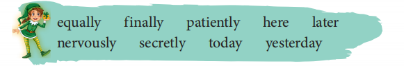
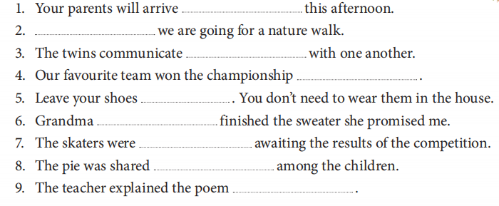
Ans: 1. later 2. Today 3. secretly 4. yesterday 5. here 6. finally 7. nervously 8. equally 9. patiently
------ Chapter 11 -------
Use the adverbs in the box to complete the sentences.
- They climbed that hill easily. ____________________
Ans: past tense
Underline the action words or verbs in these sentences. Then, write whether they are in the present, past or future tense. - We will travel to Bangalore next month. ____________________
Ans: future tense
Underline the action words or verbs in these sentences. Then, write whether they are in the present, past or future tense. - They play football in the park. ____________________
Ans: present tense
Underline the action words or verbs in these sentences. Then, write whether they are in the present, past or future tense. - The children ate their vegetables. ____________________
Ans: past tense
Underline the action words or verbs in these sentences. Then, write whether they are in the present, past or future tense. - We will watch a movie next weekend. ____________________
Ans: . future tense
Underline the action words or verbs in these sentences. Then, write whether they are in the present, past or future tense. - She brushes her teeth every night. ____________________
Ans: present tense
Underline the action words or verbs in these sentences. Then, write whether they are in the present, past or future tense. - My brother won the race. ____________________
Ans: past tense
Underline the action words or verbs in these sentences. Then, write whether they are in the present, past or future tense. - I drink milk every day.____________________
Ans: present tense
------ Chapter 12 -------
Underline the action words or verbs in these sentences. Then, write whether they are in the present, past or future tense.
- Lunch was ready, but the children were not home.
Ans: Lunch was ready, but the children were not home.
Underline the conjunction in each sentence. - She likes chocolate pudding, apple pie and black forest cake.
Ans: She likes chocolate pudding, apple pie and black forest cake.
Underline the conjunction in each sentence. - Do you want to sit on the chair or on the sofa?
Ans: Do you want to sit on the chair or on the sofa?
Underline the conjunction in each sentence. - We waited, but the bus never came.
Ans: We waited, but the bus never came.
Underline the conjunction in each sentence. - Avantika was injured, yet she ran in the race.
Ans: Avantika was injured, yet she ran in the race.
Underline the conjunction in each sentence. - It is warm during the day but cold at night.
Ans: It is warm during the day but cold at night.
Underline the conjunction in each sentence. - The little girl went to sleep for she was tired.
Ans: The little girl went to sleep for she was tired.
Underline the conjunction in each sentence. - The rabbit was scared, so it ran inside its burrow.
Ans: The rabbit was scared, so it ran inside its burrow.
------ Chapter 14 ------
Underline the conjunction in each sentence.
- The eagle is sitting ____________________the tree top. (in/on/over)
Ans: on
Choose the appropriate preposition and fill in the blanks. - Shyam built a hut ____________________a tree. (on/under/between)
Ans: under
Choose the appropriate preposition and fill in the blanks. - The cat hid ____________________the door. (under/in/behind)
Ans: behind
Choose the appropriate preposition and fill in the blanks. - I can see a boat ____________________the picture. (on/in/at)
Ans: in
Choose the appropriate preposition and fill in the blanks. - The boat is kept ____________________the river. (beside/on/in)
Ans: beside
Choose the appropriate preposition and fill in the blanks. - The glass is ____________________his hand. (at/in/on)
Ans: in
Choose the appropriate preposition and fill in the blanks. - The car is parked____________________ the beach. (under/near/between)
Ans: near
Choose the appropriate preposition and fill in the blanks. - The frisbee fell____________________ the two trees. (between/at/on)
Ans: between
------ Chapter 15 -------
Choose the appropriate preposition and fill in the blanks.
- aardvark, anteater, armadillo, antelopeAns: aardvark, anteater, antelope, armadillo Put each of these groups of animals/birds in the alphabetical order.
- buffalo, bear, boar, bisonAns: bear, bison, boar, buffalo Put each of these groups of animals/birds in the alphabetical order.
- lion, lamb, lizard, leopardAns: lamb, leopard, lion, lizard Put each of these groups of animals/birds in the alphabetical order.
- porcupine, parrot, peacock, penguinAns: parrot, peacock, penguin, porcupine Put each of these groups of animals/birds in the alphabetical order.
- reindeer, raccoon, rabbit, ratAns: rabbit, raccoon, rat, reindeer Each word here is missing a letter. Write the correct letter to complete the word.
- BEC__USE
Ans: because
Each word here is missing a letter. Write the correct letter to complete the word.
- LEA__N
Ans: learn
Each word here is missing a letter. Write the correct letter to complete the word.
- SUM__ER
Ans: summer
Each word here is missing a letter. Write the correct letter to complete the word.
- CUR__Y
Ans: curly
Each word here is missing a letter. Write the correct letter to complete the word.
- AL__NE
Ans: alone
Each word here is missing a letter. Write the correct letter to complete the word.
- WR__TE
Ans: write
Each word here is missing a letter. Write the correct letter to complete the word.
- PO__R
Ans: poor
Each word here is missing a letter. Write the correct letter to complete the word.
- FAM__LY
Ans: family
----- Chapter 2 ------
Put each of these groups of animals/birds in the alphabetical order.
-
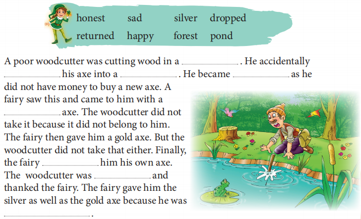
Ans: forest, dropped, pond, sad, silver, returned, happy, honest
----- Chapter 3 ------
Fill in the blanks with the words from the box.
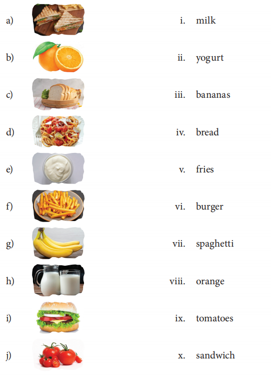
Ans: (a) x (b) viii (c) iv (d) vii (e) ii (f) v (g) iii (h) i (i) vi (j) ix
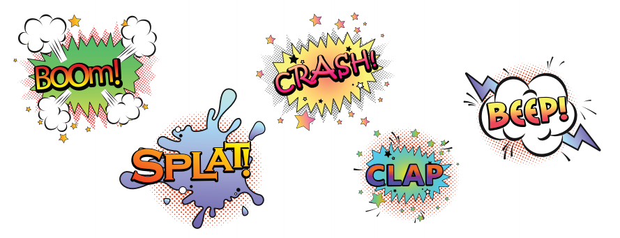
Ans: Answers may vary. Accept all relevant answers. Sample answer—
(a) tick–tock (b) fizz (c) buzz (d) hiss (e) meow
----- Chapter 5 ------
Match the object in each picture with its name on the right.
Sometimes, certain words sound like the sound they name, such as the examples given below. Write down five words that sound like the sound they name.
- I just thought of____________________ great idea.
Ans: a
Fill in the blanks using a, an or the. A few sentences may not require an article at all. Be attentive!. - Columbus was____________________ first navigator to
cross ____________________Atlantic Ocean.
Ans: the, the
Fill in the blanks using a, an or the. A few sentences may not require an article at all. Be attentive!. - ____________________Indians drink ____________________lot of tea.
Ans: X, a
Fill in the blanks using a, an or the. A few sentences may not require an article at all. Be attentive!. - Charlie Chaplin was____________________ actor who was
very popular.
Ans: an
Fill in the blanks using a, an or the. A few sentences may not require an article at all. Be attentive!. - It is ____________________only theatre in ____________________
neighbourhood.
Ans: the, the
Fill in the blanks using a, an or the. A few sentences may not require an article at all. Be attentive!. - He was____________________ first mountaineer to reach
the top.
Ans: the
Fill in the blanks using a, an or the. A few sentences may not require an article at all. Be attentive!. - I try to go for ____________________run three times____________________ week.
Ans: a, a
Fill in the blanks using a, an or the. A few sentences may not require an article at all. Be attentive!. - Pinky went to____________________ hospital to visit her friend.
Ans: the
Fill in the blanks using a, an or the. A few sentences may not require an article at all. Be attentive!. - Please pass me____________________orange.
Ans: an
Fill in the blanks using a, an or the. A few sentences may not require an article at all. Be attentive!. - I gave my friend____________________ book.____________________ book was about spaceships.
Ans: a, The
------ Chapter 6 -------
Fill in the blanks using a, an or the. A few sentences may not require an article at all. Be attentive!.
- My shoe is ____________________. (not tied)
Ans: untied
Combine the clues in the brackets with dis– or un– to complete the sentences. - Sammy ____________________ with Parul. (does not agree)
Ans: disagrees
Combine the clues in the brackets with dis– or un– to complete the sentences. - Abhay will be ____________________reach the bus stop on time.
(not able)
Ans: unable to
Combine the clues in the brackets with dis– or un– to complete the sentences. - William ____________________his parents. (does not obey)
Ans: disobeys
Combine the clues in the brackets with dis– or un– to complete the sentences. - The teacher said that she does not want ____________________
homework to be handed over. (not finished)
Ans: unfinished
------ Chapter 8 -------
Combine the clues in the brackets with dis– or un– to complete the sentences.
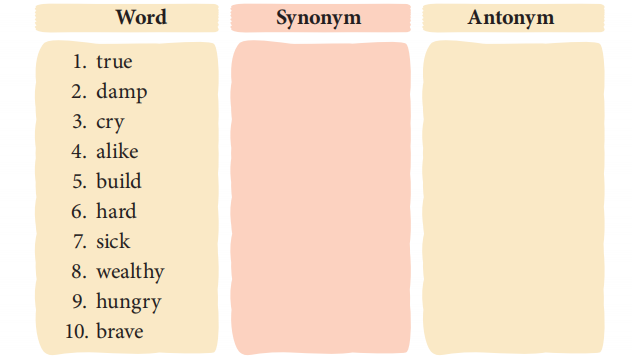
Ans: Write CE, CI or CY to complete the spelling of each word.
Write CE, CI or CY to complete the spelling of each word.- FEN____________________
Ans: FENCE
Write CE, CI or CY to complete the spelling of each word. - SPI____________________
Ans: SPICE
Write CE, CI or CY to complete the spelling of each word. - DE____________________ DE
Ans: DECIDE
Write CE, CI or CY to complete the spelling of each word. - MER____________________
Ans: MERCY
Write CE, CI or CY to complete the spelling of each word. - ____________________TY
Ans: CITY
Write CE, CI or CY to complete the spelling of each word. - PEN____________________L
Ans: PENCIL
Write CE, CI or CY to complete the spelling of each word. - DAN____________________
Ans: DANCE
Write CE, CI or CY to complete the spelling of each word. - JUI____________________
Ans: JUICE
Write CE, CI or CY to complete the spelling of each word. - SPA____________________
Ans: SPACE
Write CE, CI or CY to complete the spelling of each word. - BI____________________CLE
Ans: BICYCLE
------- Chapter 9 -------
Write a synonym and an antonym for each word.
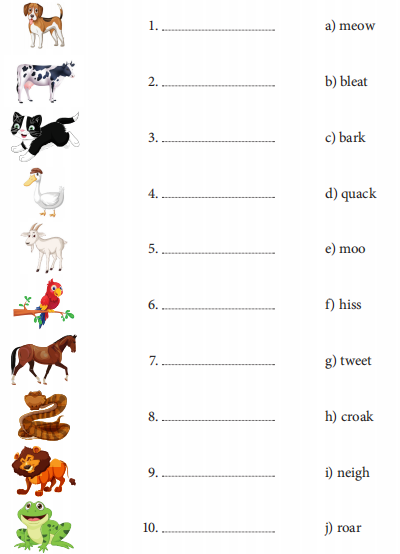
Ans: 1. dog (c) bark 2. cow (e) moo 3. cat (a) meow 4. duck (d) quack 5. goat (b) bleat 6. parrot (g) tweet 7. horse (i) neigh 8. snake(f) hiss 9. lion (j) roar 10. frog (h) croak
Match each word with its meaning.
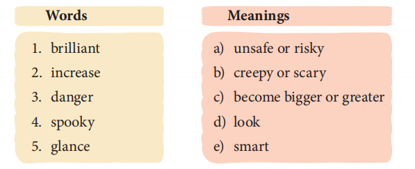
Ans:
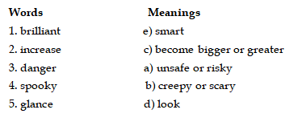
------ Chapter 11 ------
Write the name of the animal and match it to the sound it makes..
- I think this information is very ____________________. (use)
Ans: useful
Use the words in the brackets to form a suffix and fill in the blanks. - This flower is very ____________________. (beauty)
Ans: beautiful
Use the words in the brackets to form a suffix and fill in the blanks. - My new puppy is ____________________. (adore)
Ans: adorable
Use the words in the brackets to form a suffix and fill in the blanks. - Be ____________________while crossing the road. (care)
Ans: careful
Use the words in the brackets to form a suffix and fill in the blanks. - Have you seen the music ____________________? (teach)
Ans: teacher
Use the words in the brackets to form a suffix and fill in the blanks. - We all must eat ____________________food. (nutrition)
Ans: nutritious
Use the words in the brackets to form a suffix and fill in the blanks. - The dancer’s movements were ____________________. (effort)
Ans: effortless
Use the words in the brackets to form a suffix and fill in the blanks. - A ____________________singer visited our school for the Annual Day. (note)
Ans: notable
------ Chapter 12 -------
Use the words in the brackets to form a suffix and fill in the blanks.
- YHAAWTP (a route)
Ans: PATHWAY
Read the clues to unjumble the letters and identify the word. Write in the space provided. - PEASEC (to get away)
Ans: ESCAPE
Read the clues to unjumble the letters and identify the word. Write in the space provided. - HRSOST (knee-length pants)
Ans: SHORTS
Read the clues to unjumble the letters and identify the word. Write in the space provided. - HEDA (top of the body)
Ans: HEAD
Read the clues to unjumble the letters and identify the word. Write in the space provided. - ADRH (not soft)
Ans: HARD
Read the clues to unjumble the letters and identify the word. Write in the space provided. - CIHARS (you sit on these)
Ans: CHAIRS
------ Chapter 14 ------
Read the clues to unjumble the letters and identify the word. Write in the space provided.
- marina________________________________________
Ans: yes
In the given picture, ‘march’ and ‘marketable’ are the first and the last words on this page of the dictionary, respectively. Figure out if each word listed below will appear on this page of the dictionary. Then, write Yes or No. - mace____________________
Ans: no
In the given picture, ‘march’ and ‘marketable’ are the first and the last words on this page of the dictionary, respectively. Figure out if each word listed below will appear on this page of the dictionary. Then, write Yes or No. - mark____________________
Ans: yes
In the given picture, ‘march’ and ‘marketable’ are the first and the last words on this page of the dictionary, respectively. Figure out if each word listed below will appear on this page of the dictionary. Then, write Yes or No. - male____________________
Ans: no
In the given picture, ‘march’ and ‘marketable’ are the first and the last words on this page of the dictionary, respectively. Figure out if each word listed below will appear on this page of the dictionary. Then, write Yes or No. - marine____________________
Ans: yes
In the given picture, ‘march’ and ‘marketable’ are the first and the last words on this page of the dictionary, respectively. Figure out if each word listed below will appear on this page of the dictionary. Then, write Yes or No. - marsh____________________
Ans: no
In the given picture, ‘march’ and ‘marketable’ are the first and the last words on this page of the dictionary, respectively. Figure out if each word listed below will appear on this page of the dictionary. Then, write Yes or No. - marrow____________________
Ans: no
In the given picture, ‘march’ and ‘marketable’ are the first and the last words on this page of the dictionary, respectively. Figure out if each word listed below will appear on this page of the dictionary. Then, write Yes or No. - marigold____________________
Ans: yes
In the given picture, ‘march’ and ‘marketable’ are the first and the last words on this page of the dictionary, respectively. Figure out if each word listed below will appear on this page of the dictionary. Then, write Yes or No. - margin____________________
Ans: yes
In the given picture, ‘march’ and ‘marketable’ are the first and the last words on this page of the dictionary, respectively. Figure out if each word listed below will appear on this page of the dictionary. Then, write Yes or No. - marry____________________
Ans: no
------- Chapter 15 -------
In the given picture, ‘march’ and ‘marketable’ are the first and the last words on this page of the dictionary, respectively. Figure out if each word listed below will appear on this page of the dictionary. Then, write Yes or No.
- The snowflakes look pretty.
Ans:yes
Say yes or no.
- The snowflakes fall from housetops.
Ans: no
Say yes or no.
- The snow is soft.
Ans: yes
Say yes or no.
- All the grass is not covered by the snow.
Ans: no
Say yes or no.
- The bare black bushes turn white.
Ans: yes
------ Chapter 1 ------ Say yes or no.
- Sammy liked getting his hair cut.
Ans: False
Write True or False for these statements.
- At first, Sammy was very happy with his long hair.
Ans: True
Write True or False for these statements.
- Sammy liked to trip over his long hair.
Ans: False
Write True or False for these statements.
- It became difficult for Sammy to wear his cap.
Ans: True
Write True or False for these statements.
- The barber was very happy after cutting Sammy’s hair
Ans: False
------ Chapter 2 ------ Write True or False for these statements.
- Long ago, people did not know how to ____________________.
i. speak ii. plant crops iii. kill animals iv. climb trees
Ans: plant crops
Complete the sentences by choosing the correct option. - The god Nyame, up in the sky, had all the ________________________
of the world.
i. wisdom ii. wealth iii. happiness iv. knowledge
Ans: wisdom
Complete the sentences by choosing the correct option. - Every time Anansi looked in the clay pot, he learned _______________________.
i. about farming ii. how to keep himself occupied
iii. something new iv. about his weaknesses
Ans: something new
Complete the sentences by choosing the correct option. - Anansi became so angry at the thought that he _________________________.
i. refused to climb the tree ii. hid all the wisdom
iii. scolded his son iv. threw the pot to the ground
Ans: threw the pot to the ground
------ Chapter 3 ------ Complete the sentences by choosing the correct option.
- Meenu hates lunch break because .
i. she has no friends
ii. her friends eat her tiffin
iii. her mother always gives her idli
iv. she can’t go outside the classroom
Ans: yes - Kamlesh was sulking because .
i. no one was talking to her
ii. she did not like the food in her tiffin
iii. she had forgotten her tiffin at home
iv. her tiffin was empty that day
Ans: yes - The whole class crowded around Kamlesh’s desk to .
i. eat food from her tiffin
ii. listen to what she had to say
iii. have a tiffin party
iv. eat food from Meenu’s tiffin
Ans: yes
------ Chapter 5 ------ Choose the correct option.
Choose the correct option.
Choose the correct option.
- The narrator’s dog is from ____________________.
i. Pluto ii. Mars iii. Neptune
Ans: iii. Neptune
Choose the correct option. - The narrator got the dog from ____________________.
i. aliens from Neptune
ii. his parents
iii. astronauts from Mars
Ans: ii. his parents
Choose the correct option. - The narrator named his dog Shoe because ____________________.
i. it liked to eat shoes
ii. it looked like a shoe
iii. the first thing it ate was a shoe
Ans: iii. the first thing it ate was a shoe
------- Chapter 6 -------
Choose the correct option.
- Nothing helps babies as much as ____________________.
Ans: blowing bubbles
Fill in the blanks. - The bubbles change ____________________as they grow.
Ans: colours
Fill in the blanks. - When the bubbles are blown they ____________________away.
Ans: sail
Fill in the blanks. - Children can spend the entire day____________________.
Ans: blowing bubbles
------- Chapter 7 --------
Fill in the blanks.
- Kindru-Lalim and Kincha Lali are from ……………………….. .
i. Meghalaya ii. Arunachal Pradesh iii. Manipur
Ans: ii. Arunachal Pradesh
Choose the correct option. - The first animal they met in the jungle was …………………………….. .
i. an elephant ii. a snake iii. a buffalo
Ans: i. an elephant
Choose the correct option. - The snake told Kindru-Lalim and Kincha Lali to ……………………….. .
i. be careful ii. fetch long poles iii. gather stones
Ans: ii. fetch long poles
------- Chapter 8 --------
Choose the correct option.
- The children were taken to the old park by ____________________.
i. Henry ii. Gareth iii. Mary
Ans: i. Henry
Choose the correct option. - The children found ____________________ in the park.
i. birds ii. a swing set and slide iii. a football
Ans: ii. a swing set and slide
Choose the correct option. - Henry thought something was wrong when ____________________.
i. he saw the big moon
ii. it became dark
iii. he saw the moon go behind the clouds
Ans: iii. he saw the moon go behind the clouds
------- Chapter 9 -------
Choose the correct option.
- The little fairy comes ____________________.
i. at night ii. in the evening iii. in the morning
Ans: i. at night
Choose the correct option. - The little fairy has ____________________eyes.
i. brown ii. blue iii. green
Ans: ii. blue
Choose the correct option. - The little fairy comes down from the ____________________.
i. trees ii. stars iii. moon
Ans: iii. moon
Choose the correct option. - The fairy uses her____________________ to give children dreams.
i. hand ii. wand iii. hairband
Ans: ii. wand
------- Chapter 10 ------
Choose the correct option.
- From the window of her classroom, Puchku can see .
i. birds ii. the jamun tree iii. Dodla and Boltu
Ans: ii. the jamun tree
Choose the correct option. - The birds that hide in the leaves of the jamun tree .
i. sing songs
ii. eat the jamuns cleverly
iii. poop on Puchku’s head
Ans: iii. poop on Puchku’s head
Choose the correct option. - One day, Puchku finds .
i. a bowl made of twigs and leaves
ii. a cat sitting under the jamun tree
iii. a baby bird in its nest
Ans: i. a bowl made of twigs and leaves
Choose the correct option. - Puchku decides that the mission for (BPD)2 will be .
i. to find the baby bird’s mother
ii. to find the baby bird’s song
iii. to find the baby bird’s siblings
Ans: ii. to find the baby bird’s song
------- Chapter 11 ------
Choose the correct option.
- Mary and Josana were ____________________.
i. neighbours ii. best friends iii. both (i) and (ii)
Ans: iii. both (i) and (ii)
Choose the correct option. - Josana made a ____________________for her mother.
i. headband ii. waistband iii. wristband
Ans: ii. waistband
Choose the correct option. - Samuel helped Mary ____________________ .
i. make fish curry
ii. make a bamboo bridge
iii. lift the bamboo bridge up the tree
Ans: iii. to lift the bamboo bridge up the tree
------- Chapter 12 -------
Choose the correct option.
- The tree was like a ____________________to the leaves.
i. father ii. mother iii. grandfather
Ans: i. father
Choose the correct option. - All the leaves were____________________ in colour.
i. red ii. different iii. brown
Ans: ii. different
Choose the correct option. - All the leaves wanted to ____________________.
i. leave the tree
ii. stay on the tree
iii. turn green in colour
Ans: ii. stay on the tree
Choose the correct option. - Which season is the poem based on?
i. spring ii. summer iii. autumn
Ans: iii. autumn
------- Chapter 13 ------
Choose the correct option.
- The man told his father to ____________________.
i. stop eating his soup
ii. be careful
iii. eat the vegetables
Ans: ii. be careful
Choose the correct option. - The wife was angry with the grandfather because ____________________.
i. he was playing with the spoon
ii. he threw the soup away
iii. he spoilt the tablecloth
Ans: iii. he spoilt the tablecloth
Choose the correct option. - While he was sitting in the corner, the grandfather felt very ____________________.
i. happy ii. angry iii. sad
Ans: iii. sad
------- Chapter 14 -------
Choose the correct option.
- The Queen of Sheba had heard the most about King Solomon’s
____________________.
i. power ii. glory iii. wisdom
Ans: iii. wisdom
Choose the correct option. - The queen wanted to test the king’s____________________.
i. men ii. wisdom iii. power
Ans: ii. wisdom
Choose the correct option. - The king solved the puzzle given by the queen ____________________.
i. with the help of the bees
ii. with the help of his courtiers
iii. on his own
Ans: i. with the help of the bees
------- Chapter 15 -------
Choose the correct option.
- Where do the snowflakes fall?
Ans: The snowflakes fall on the wall and housetops - What does the poet see in the garden?
Ans: The poet sees that the grass and bushes are all covered in snow. - Why does the poet call the bare bushes ‘black’?
Ans: The poet calls the bare bushes ‘black’ because as opposed to the white snow, the trees looked black without snow. Also, the trees were dead. - What was the ‘pretty sight’?
Ans: The ‘pretty sight’ was that the bare bushes and green grass were all covered in white snow. - What is the rhyme scheme of the poem?
Ans: abcb - Find out words from the poem that rhyme with these words.
a) sky b) green c) white
Ans: (a) lie (b) seen (c) sight - As you were reading the poem, what did you imagine? Draw it in your
drawing book.
Ans: Answers may vary. Accept all relevant answers.
------ Chapter 1 ------
- Why did Sammy decide not to get his hair cut anymore?Ans: Sammy decided not to get his hair cut anymore because he got a very bad haircut one day—his worst ever haircut yet.
- What did Sammy like about his long hair?Ans: He liked how it blew in every direction when it was windy outside, and how it moved when he shook his head around.
- Why did Sammy eat paper napkins instead of pancakes?Ans: Sammy ate paper napkins instead of pancakes because he couldn’t see what he was eating
- What did Sammy find in his hair while washing it?Ans: He found two potato chips and a paper clip in his hair while washing it.
- What made it hard for Sammy to wear his cap?Ans: His head had too much hair. His cap couldn’t possibly fit on a head with so much hair
- Why did Sammy stop enjoying his long hair?Ans: Sammy stopped enjoying his long hair because it grew past his shoulders, and Sammy didn’t know what to do with it. It grew past his feet, and Sammy kept tripping over it. It grew past his belly button, and Sammy wasn’t enjoying his long hair as much as he used to.
- When did Sammy’s parents take him for a haircut?Ans: Sammy’s parents took him for a haircut when his hair got too long to manage.
- What did Sammy feel after his haircut?Ans: Sammy felt great after his haircut. He realised that he may have been wrong about haircuts.
------ Chapter 2 ------
- Name the things that the people of long ago did not know.
Ans: They didn’t know how to plant crops, or how to weave cloth, or how to make iron tools.
- Who was Nyame?
Ans: Nyame was the God in the sky. He had all the wisdom.
- Why did Nyame keep wisdom in a clay pot?
Ans: He kept wisdom in a clay pot to keep it safe.
- To whom did Nyame give the pot?
Ans: Nyame gave the pot to Anansi.
- Why did Anansi want to keep the pot at the top of a tall tree?
Ans: Anansi wanted to keep the pot at the top of a tall tree so that he could keep it a secret and use it all for himself.
- What made it difficult for Anansi to climb the tree with the pot?
Ans: He tied the pot to his stomach and it kept bumping him in the knees all the time
- What did Anansi’s son tell him to do with the pot?
Ans: Anansi’s son told him to tie the pot to his back instead.
- What made Anansi angry?
Ans: He was angry at the fact that he was supposed to have all the wisdom in the world. However, his son proved to be cleverer than him.
- What did Anansi do with the pot?
Ans: Anansi threw the clay pot down and it smashed into pieces.
- What happened when the pot broke?
Ans: When the pot broke, the wisdom was free for everyone to share.
------ Chapter 3 ------
- Why does the elephant find it difficult to use the telephone?
Ans: The elephant finds it difficult to use the telephone because he doesn’t have hands to hold the receiver and the cord gets all entangled in its trunk. - Where does the elephant’s trunk get entangled?
Ans: The elephant’s trunk gets entangled in the telephone cord. - What happens when the elephant tries to free its trunk?
Ans: The more he tries to free its trunk, the more it gets entangled and the louder the telephone buzzes. - The poem has quite a few made-up words. Find them and write them down
in your notebook.
Ans: telephant, elephone, telephunk, telephee, elephop, telephong - What is the rhyme scheme of the poem?
Ans: The rhyme scheme of the poem is aabbcc and so on. - List the rhyming words that have been used in the poem.
Ans: elephant—telephant, elephone—telephone, quite—right, trunk—telephunk, free—telephee, song—telephong
------ Chapter 4 ------
- What did Meenu’s mother always give her in the tiffin box?
Ans: Meenu’s mother always gave her idli and podi in her tiffin box. - Why was Kamlesh unhappy with her tiffin box?
Ans: Kamlesh was unhappy with her tiffin box because her mother had packed jowar bhakri and bhaji, as always. - What made Meenu’s mouth water?
Ans: Kamlesh’s lunch makes Meenu’s mouth water. - What did Kamlesh bring the next day?
Ans: The next day, Kamlesh brought mutke. - Why did Meenu’s mother give her extra idlis?
Ans: Meenu’s mother gave her extra idlis so that she could share her food with Kamlesh. - What did Sachi bring in her tiffin box?
Ans: Sachi brought pakhala bhata with potatoes. - What did Meenu tell the whole class?
Ans: She told the whole class that they were having a tiffin party and everyone was invited. - Why does Meenu love tiffin time now?
Ans: Meenu loves tiffin time now because every day is a tiffin party!
------ Chapter 5 ------
- What did Meenu’s mother always give her in the tiffin box?
Ans: The narrator’s parents liked to visit different planets during the weekends as they were part time astronauts.
Answer these questions. - Why was Kamlesh unhappy with her tiffin box?
Ans: The narrator’s favourite dish was Pluto pancakes.
Answer these questions. - What made Meenu’s mouth water?
Ans: The narrator’s parents kept their spaceship in the garage.
Answer these questions. - What did Kamlesh bring the next day?
Ans: Shoe liked to eat whatever the narrator ate.
Answer these questions. - Why did Meenu’s mother give her extra idlis?
Ans: The narrator taught the dog to play dead, roll over, shuffle cards, cook and use a computer.
Answer these questions. - What did Sachi bring in her tiffin box?
Ans: The narrator says that ‘all Neptunians are good sports in the context that Shoe is faster than any of the earth dogs in the neighborhood.
Answer these questions. - What did Meenu tell the whole class?
Ans: The dog liked to eat what the narrator ate and hated the earthly dog food.
Answer these questions. - Why does Meenu love tiffin time now?
Ans: Shoe and the narrator were hoping that his parents won’t bring back a cat because both of them were happy with each other and didn’t want another addition.
------- Chapter 6 -------
Answer these questions.
- Where do children dip the pipes?
Ans: The children dip their pipes in the suds.
. - How do children blow the bubbles?
Ans: The children blow their bubbles in a serious manner by dipping their pipes among the suds and then blowing.
. - What is good enough to fill the children’s days?
Ans: Dipping their pipes among the suds blowing through and watching the lovely colours as the bubbles grow. Then throwing them softly in the air and watching them sail away is good enough to fill the children’s days.
. - May what be as bright with tint of rosy hope?
Ans: May all life’s bubbles be as bright, with tint of rosy hope.
. - What is the rhyme scheme of the poem?
Ans: abcb
. - Write the rhyming words of these words from the poem.
a) troubles ____________________b) blow____________________
c) away ____________________d) be ____________________
Ans: (a) bubbles (b) grow (c) day (d) see
------- Chapter 7 -------
.
- Where did people live before houses were made?
Ans: People lived in caves before houses were made.
Choose the correct option. - What did the elephant tell Kindru-Lalim and Kincha Lali to do?
Ans: The elephant told Kindru-Lalim and Kincha to cut trees and make strong pillars for the house.
Choose the correct option. - What advice did the snake give to Kindru-Lalim and Kincha Lali?
Ans: The snake advised Kindru-Lalim and Kincha to fetch thin and long poles.
Choose the correct option. - Who was Mithun? Why was she sad?
Ans: Mithun was the buffalo. She was sad because the tiger had killed her husband.
Choose the correct option. - What did she suggest to Kindru-Lalim and Kincha Lali?
Ans: She suggested to Kindru-Lalim and Kincha Lali to make a roof with cross poles, like the bones of the skeleton of her husband, to protect the house from wild animals.
Choose the correct option. - What advice did the fish give them?
Ans: The fish advised them to collect a lot of leaves and put them on the roof, one on top of the other like the scales of a fish, to protect the house from sun and rain.
Choose the correct option. - What did Kindru-Lalim and Kincha Lali do after the house was ready?
Ans: Kindru-Lalim and Kincha Lali called all the animals of the forest to come and see their house.
------ Chapter 8 ------
Choose the correct option.
- What does Gareth say to Henry about going to the park?
Ans: Gareth says to Henry that the park is abandoned and children are not allowed to play in the park.
. - Why were they not supposed to go to that park?
Ans: They were not supposed to go to that park because it was abandoned.
. - Describe the moon as seen by the children.
Ans: The children saw the moon unusually big and hazy. It looked bigger in the sky because it was closest to the Earth when it is called a super moon.
. - Why was the moon looking bigger than usual?
Ans: The moon was looking bigger than usual because it was closest to the Earth.
. - What did the children do in the park till it was time to go home?
Ans: The children continued to play around the swing in the park and slide, dancing, singing songs and telling stories into the night till it was time to go home.
. - Why did Henry feel that something was wrong?
Ans: Henry looked up at the moon and saw clouds pass over. He felt something was wrong.
. - What did Henry find inside the abandoned house?
Ans: Henry found a hammer and an old-fashioned safe inside the abandoned house.
. - Why did Henry scream when he was inside the abandoned house?
Ans: Inside the abandoned house when Henry suddenly saw a white sheet with holes appear, he screamed
. - What does Mary tell Henry the next day?
Ans: Mary told Henry the next day that she was the one wearing the white sheet with holes in it.
------- Chapter 9 -------
.
- Describe the fairy.
Ans: The little fairy has blue eyes, brown hair, wings with silver spots on them. She has a silver wand in her hand.
. - For which child does she wave her wand?
Ans: For a good child she waves her wand.
. - How does the fairy give pleasant dreams to children?
Ans: The fairy gives pleasant dreams to good children when they go to bed by waving her wand from right to left and making a circle round their head.
. - Name any four things that children see in their dreams.
Ans: …fountains filled with fairy fish, trees that bear delicious fruit, arbors filled with dainty scents, lovely flowers that never fade, Bright ’flies that flitter in the sun, glow-worms shining in the shade talking birds with gifted tongue for singing songs and telling tales, and pretty dwarfs to show the way Through the fairy hills and fairy dales.
. - What is the rhyme scheme of the poem?
Ans: abcb
. - Write the rhyming words of these words from the poem.
a) brown____________________ b) bed____________________
c) wish____________________ d) shade____________________
Ans: (a) down (b) head (c) fish (d) fade
------- Chapter 10 -------
.
- Why is the jamun tree called ‘naughty’?
Ans: …because it drops fruits that leave bright purple splodges on Puchku’s uniform. There are also birds that hide in its leaves and slyly poop so that it goes SPLAT! on her head.
. - Where do the three friends go every day when it is tiffin time?
Ans: Every day when it is tiffin time the three friends go to the jamun tree.
. - Why is Boltu always the last one to reach the jamun tree?
Ans: …because there’s always a butterfly or a worm or a flower that makes him forget the race.
. - What does Boltu explain to Dodla and Puchku about the baby bird?
Ans: … about the baby bird that there’s someone in the bowl, with two little eyes and one little beak.
. - How do they carry the baby bird to look for its song?
Ans: Boltu gets some cotton wool and Dodla finds a cardboard box. Puchku draws a map of the places where they could look for a song for the baby bird.
. - Does the baby bird find its song in the music room?
Ans: No, the baby bird does not find its song in the music room.
. - What does Wildlife Didi tell the children?
Ans: The Wildlife Didi told the children to be patient and that it would eventually find its song.
. - Why does the baby bird nod her head and say ‘Cheep’?
Ans: When Puchku picks up the baby bird carefully and asks the Baby bird, to just keep her ears open and any sound she liked she could make it her song. Puchku also agreed to sing it along with her, and the baby bird nods her little head and says, ‘Cheep.’
------ Chapter 11 -------
.
- Why was Josana upset with Mary?
Ans: Josana was upset with Mary because Mary was unkind to her by saying that the waistband Josana had made for her mother was not good.
. - With whom did Josana have lunch in school the next day?
Ans: Josana had lunch with Caroline in school the next day.
. - What did Mary start making with the two bamboo poles?
Ans: Mary started making a bamboo bridge with the two bamboo poles.
. - Where did Mary take the bamboo bridge? Why did she do this?
Ans: Mary took the bamboo bridge to Josana’s house. She did this to patch up and become friends again.
. - How did Samuel help Mary?
Ans: Samuel helped Mary by helping her in fixing the bamboo bridge between the two branches of the tree.
. - What did Josana say when she saw the bamboo bridge on the tree?
Ans: When she saw the bamboo bridge on the tree Josana asked whether they could build a train to run on the bridge.
------ Chapter 12-------
.
- Why does Father Tree ask the leaves to go to bed? What does it
actually mean?
Ans: The Father Tree asks the leaves to go to bed: as in, it’s time to go to sleep. It actually means that it’s time for them to fall and die.
. - Why do the leaves want to stay on the tree ‘a little longer’?
Ans: The leaves want to stay on the tree ‘a little longer’ because it was such a very pleasant day and they do not want to go away (to die).
. - What do the leaves hope for the ‘great Tree’ to forget?
Ans: The leaves hope that the ‘great Tree’ would forget to let go of them and allow them to stay on until spring if they all beg and plead with him.
. - Does the tree give in to the demands of the leaves? What does he do?
Ans: The tree does not give in to the demands of the leaves. Instead, he smiled to hear their whispering and urged all of them to come to bed.
. - Are the leaves happy to be on the ground? Which line(s) tell you that?
Ans: Yes, they are happy. It is their natural destiny: a huddled swarm, to wrap them safe and warm, ‘It is so nice to go to bed!’
. - What is the rhyme scheme of this poem?
Ans: ababb
. - Write the rhyming words for these words from the poem.
a) brown____________________ b) leaf____________________
c) cried____________________ d) smiled____________________
Ans: (a) down (b) grief (c) wide (d) child
. - Personification is a poetic tool in which poets give human qualities to non-human objects. In this poem, the poet has used this tool a lot by treating
the tree and the leaves as human beings, with actual feelings. Write a few
lines from the poem to show the use of this poetic tool.
Ans: He smiled to hear their whispering; the great Tree to his children said: ‘Ah!’ begged each silly, pouting leaf; Frolicked and danced, and had their way; And ere the leaves could urge their prayer, each sleepy child Replied, ‘Good-night,’ and murmured, ‘It is so nice to go to bed!’
------- Chapter 13 ------
.
- What made the man and his wife angry?
Ans: The man and his wife were angry because he had spilled the soup on the clean tablecloth.
. - Why did the grandfather keep dropping things?
Ans: The grandfather kept dropping things because his hands were trembling.
. - What did the wife do when the grandfather broke the plate?
Ans: When the grandfather broke the plate, the wife got angry and gave him wooden dishes.
. - Why did the wife make the grandfather sit in the corner to eat?
Ans: The wife made the grandfather sit in the corner to eat so that he will not spoil the tablecloth.
. - What did little Hans do when he saw his grandfather treated like that?
Ans: When little Hans saw his grandfather being treated like that, he left the table and began to play with his blocks on the floor. He started making a wooden trough for his parents to eat from for the time when he would grow big.
. - How did the man and his wife realize their mistake?
Ans: The man and his wife realized their mistake when they saw their son making the wooden trough for them.
. - What did the man and his wife do next?
Ans: The man asked the father to throw the wooden dish out of the window and his wife started weeping and asked for his forgiveness.
------- Chapter 14-------
.
- What did the Queen of Sheba say to King Solomon when she entered
his court?
Ans: ‘O King in my own country, far, far away, I have heard much about your power and glory, but much more about your wisdom. Men have told me that there is no riddle so cunning that you cannot solve it. Is this true?’
. - Which puzzle did the queen want the king to solve?
Ans: The Queen held up two wreaths, one of which was genuine – plucked from the King’s garden and the other being fake – made by a skilled artist to look identical. The King had to figure out which wreath was fake and which was real.
. - Why did the king find it difficult to solve the puzzle?
Ans: …because both the wreaths looked identical and the King could not touch it to identify which one is real or fake.
. - What did the king suddenly remember?
Ans: …he remembered that close by his window there was a climbing vine filled with beautiful sweet flowers. He remembered that he had seen many bees flying among these flowers and gathering honey from them.
. - How did the king solve the puzzle?
Ans: The king solved the puzzle by opening the window and the bees flew in and went to the wreath made of real flowers.
. - Write three facts about King Solomon.
Ans: Three facts about King Solomon:
i.King Solomon lived three thousand years ago.
ii.He was famous for his wisdom.
iii.He gathered knowledge from the little things which common men pass by unnoticed.
------- Chapter 15 -------
.
- Do you think good hygiene is important? Why/Why not? Ans: Answers may vary. Accept all relevant answers. Sample answer—Yes, good hygiene is important because it helps prevent illnesses and infections from germs, bacteria and viruses.
- What are the things that you do to take care of your body? Ans: Answers may vary. Accept all relevant answers.
- Do you think good food and cleanliness are equally important for our body?Ans: Answers may vary. Accept all relevant answers. Sample answer—Yes, they are equally important for our body. One takes care of the inside, while the other takes care of the outside of the body.
----- Chapter 2 ------
- When we get something that can be of use to everyone, should we keep it to
ourselves or share it with others?
Ans: Answers may vary. Accept all relevant answers. Sample answer—We should share it with everyone. We should always think about others, along with thinking about ourselves. It will make us a kinder person. - Write a few lines about the character of Anansi.
Ans: Anansi was greedy and selfish. He did not want to share the wisdom with anyone else. He also showed us that he was quite short-tempered. He could not bear to think that his son was cleverer than him. - Even though Anansi had the pot of wisdom, his son was cleverer than him.
What does this tell us?
Ans: This tells us that the son was probably innately smart and he got more wisdom by just looking at the pot that his father was carrying. It was enough for him to give intelligent suggestions. - What lesson did you learn from this folk tale?
Ans: Answers may vary. Accept all relevant answers. Sample answer—Wisdom is best put to use when it is shared with others and used for everyone’s benefit.
----- Chapter 3 ------
- What is this poem about?
Ans:This poem is about an elephant who tries to use a telephone but ends up getting his trunk entangled in the cord. - What does the poet mean by ‘drop the song’?
Ans: By ‘drop the song’ the poet means to end the poem. - This poem is an example of a nonsense poem and is one of Laura E.
Richards’ more famous poems. It uses a lot of made-up words. How is it
different from other poems? Did you like reading it? Why/Why not?
Ans: Answers may vary. Accept all relevant answers.
----- Chapter 4 ------
- Eating the food in the tiffin boxes together brings such joy to the children
in the story. Name a few things that bring joy to your life. Give a reason
for each.
Ans: Answers may vary. Accept all relevant answers. - Do you enjoy sharing your tiffin with your friends?
Ans: Answers may vary. Accept all relevant answers. - Is it a good idea to share your food with people who may not have enough
to eat? Why/Why not?
Ans: Answers may vary. Accept all relevant answers. Sample answer—Yes, I think it is a good idea to share food with people who may not have enough to eat. Just because they cannot afford food does not mean that they do not feel hungry. They do feel hungry and they do want to eat. Therefore, whenever we get the opportunity to share with those who have less than us, we should not hesitate.
----- Chapter 5 ------
- Did the narrator and Shoe share a good bond? How do you know?
Ans: Yes, the narrator and Shoe shared a good bond because the narrator knew everything about Shoe: what the dog liked, disliked, the eating habits, what all it could and could not do.
. - Why would dogs and squirrels possibly be enemies on Neptune?
Ans: Dogs and squirrels would possibly be enemies on Neptune because they were enemies here on Earth too.
. - Even though it is from Neptune, why do you think Shoe was able to quickly
adapt to life on Earth?
Ans: Even though it is from Neptune, Shoe was able to adapt to life on Earth because it just had to understand the language and then could take instructions clearly.
. - What are people from other planets called? Write a few lines about them.
(You make take the help of your EVS/Science teacher.)
Ans: Answers may vary. Accept all relevant answers
----- Chapter 6 -------
.
- Write a few lines about Kindru-Lalim and Kincha Lali.
Ans: Kindru-Lalim and Kincha Lali were two close friends. They lived in a faraway land of the East. They lived in a dark cave and they decided to build a house. They took ideas and advice from nature and worked hard to build the place. They also shared credit with the animals who helped them.
. - All the animals helped Kindru-Lalim and Kincha Lali by giving them good
advice. Do you think helpfulness is a good trait? Why/Why not?
Ans: All the animals helped Kindru-Lalim and Kincha Lali by giving them good advice. Yes, I think helpfulness is a good trait because it makes everyone around happy. Accept any relevant answer.
. - What does this story tell you about the relationship between animals and
human beings?
Ans: Animals and humans have always shared a very strong bond and both have helped each other with food and shelter at different points of time. Domesticated/non-domesticated/wild – all types of animals help in creating a world in which everyone can live in comfortably and share resources.
. - What advice would you have given if Kindru-Lalim and Kincha Lali had
asked you for help?
Ans: Answers would vary. Accept any relevant answer.
------ Chapter 8 -------
.
- Should the children have gone to the park? Why/Why not?
Ans: No. They shouldn’t have gone to the park as it was abandoned and anything could have happened. / Yes. But they could have gone with their parents for supervision.
. - Was Henry really brave? Give reasons for your answer.
Ans: Yes, Henry was brave as he was adventurous and continued with hammering the floor of the abandoned house and tried to open the safe all alone even though Gareth had left and the ghost had appeared too.
. - Would you have gone inside the abandoned house if your friend had asked
you to? What would you have done?
Ans: Answers may vary. Accept any relevant answer.
. - Why did Mary and Gareth pull a prank on Henry? Were they trying to
teach him a valuable lesson?
Ans: Yes. They wanted to teach Henry a valuable lesson that he should be careful no matter what the circumstances. Safety before adventure.
. - If Mary and Gareth had pulled a prank on Henry, then why did they have
no answers about the size and appearance of the moon? What could be the
reason for that?
Ans: The moon was a natural phenomenon and was beyond the control of both Gareth and Mary. That was only a distraction and was not really part of the prank.
------ Chapter 9 -------
.
- What makes Puchku think that the baby bird is a baby dragon?
Ans: The question that was in Puchku’s mind was ‘Pigeons coo, crows caw, parakeets chatter, peacocks squawk, kites screech. If this is a bird, why is she quiet?’ since she was quiet, she could not be a bird and can be anything else, like a dragon perhaps.
. - Was it a good idea for the three children to look for a song for the baby
bird? Why/Why not?
Ans: No. It was not, because its mother would eventually have found the baby bird, but since it was touched by humans, the mother would abandon it / Yes. They had compassion and displayed a sense of kindness trying to give the lonely bird some companionship when no one else did.
. - Have you ever helped somebody? What did you do to help them? How did
you feel afterwards?
Ans: Answers may vary. Accept any suitable answer.
. - If you had found a baby bird in your garden or at school, what would you
have done? Why?
Ans: Answers may vary. Accept any suitable answer.
------ Chapter 11 -------
.
- Do you think Mary was being unkind to Josana when she said that she did
not like the waistband? Why do you think so?
Ans: No. She was not being unkind. She was being honest about her feelings. It was Josana who did not take Mary’s honesty positively.
. - Was Josana wrong in being upset with her friend? Why do you think so?
Ans: Yes. She was wrong in being upset with Mary. Mary was just honest about what she would/would not do with the waistband. In no way did Mary say it was a bad product / No. She was not wrong in being upset, as Mary insulted her efforts.
. - Have you ever been upset with your best friend? How did you two start
talking again?
Ans: Answers may vary. Accept any relevant answer.
------ Chapter 12 -------
.
- Do you think Father Tree is cruel? Why/Why not?
Ans: Yes. The Father Tree is cruel as he wants the leaves to go to bed (to die). He doesn’t want to hear their logical arguments and does not give them a chance to speak. / No. The Father Tree is not cruel. He is a loving father and knows the natural destiny of his leaves. He lets go of them at the right time.
. - Write a few lines about the relationship between Father Tree and
the leaves.
Ans: The Father Tree is understanding and holds on to the leaves till it is time to let go of them. He does not listen to the complaints, arguments or wishes of the leaves, because he knows what’s best for them and lets time take its natural course.
. - Do you have a favourite season? Which one is it and why?
Ans: Answers may vary. Accept any relevant answer.
. - What is your favourite thing about going to bed?
Ans: Answers may vary. Accept any relevant answer.
. - What do you think happens to the leaves that turn brown and fall to the
ground?
Ans: Leaves that turn brown and fall to the ground have reached the end of their life-cycle and therefore fall to the ground and die. They decompose with the snow that falls on top of them and become one with the ground.
------ Chapter 13 -------
.
- Should any child treat his/her parent like the man and his wife treated the
grandfather? Why/Why not?
Ans: No. Parents do so much for their children and look after them when they are children. No child should treat their parents that way when they become old. Rather, all children should do all they can to look after their parents, as the parents sacrifice a lot for their children.
. - Do you think the man and his wife did the right thing by saying sorry to
the grandfather? Or was it too late to say sorry?
Ans: Yes. They did the right thing by apologizing to the old man. It is better to be late than never. At least they apologized even if it were late.
. - He will treat us as we have treated father! This line tells us that a child
learns what he/she sees around in the house. Do you agree?
Ans: Yes, a child learns what he/she sees around in the house. Children always imitate their parents and charity begins at home. So, it is very important to do/say the right thing as children are always watching and learning.
. - How should we treat the elders in our family?
Ans: …with respect and dignity.
------ Chapter 14 ------
.
- Write a few lines about King Solomon’s wisdom.
Ans: King Solomon was the wisest man in the whole world. The fame of his wisdom had spread so far and wide that people came from all over the world to meet him/challenge him/test him. King Solomon was not proud, but rather held his calm and solved their riddles.
. - Could King Solomon have solved the puzzle without the help of the bees?
Why do you think so?
Ans: Probably not. He could not have solved it without the bees. The bees moved to the genuine wreath and pointed out the real wreath in the most natural way possible.
. - What lesson did you learn from the story?
Ans: One should always be calm even when an opponent challenges you and one must always think through as an answer will come to mind.
-------- Chapter 15 -------
.
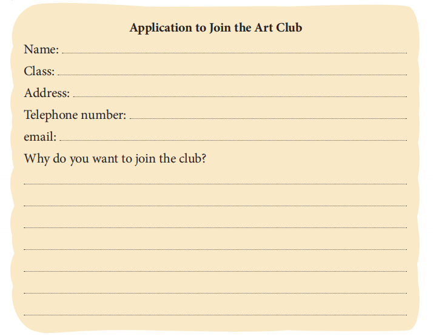
Ans: Answers may vary. Accept all relevant answers.
----- Chapter 2 ------
You would like to join your school art club. Fill up the form with your details.
-
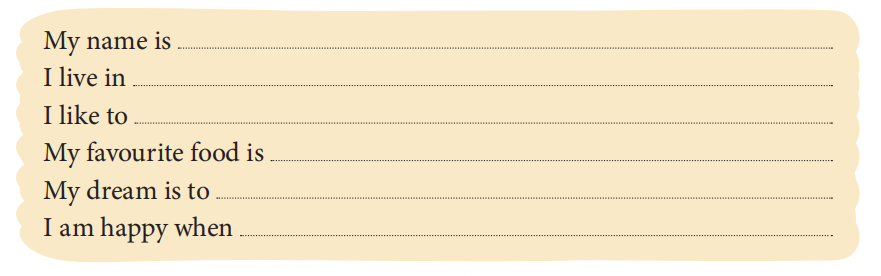
Ans: Answers may vary. Accept all relevant answers
----- Chapter 3 ------
Complete a few sentences about yourself.
- You may begin like this: In my family, we love good food…
Ans:Answers may vary. Accept all relevant answers.
----- Chapter 5 ------
Write a paragraph on ‘My family’s eating habits’. You must talk about (a) what you generally eat for breakfast, lunch, dinner (b) food items that are made for special occasions. Do not forget to use linking words such as ‘because’, ‘and’, ‘also’, etc.
-
Ans: Answers may vary. Accept any relevant value points. Encourage students to write individually using the suggestive cues to the exercise below.
------- Chapter 8 -------
Paste the picture of a kind of house you like a lot. Then, write five facts about it. You may take the help of your parents/teachers.
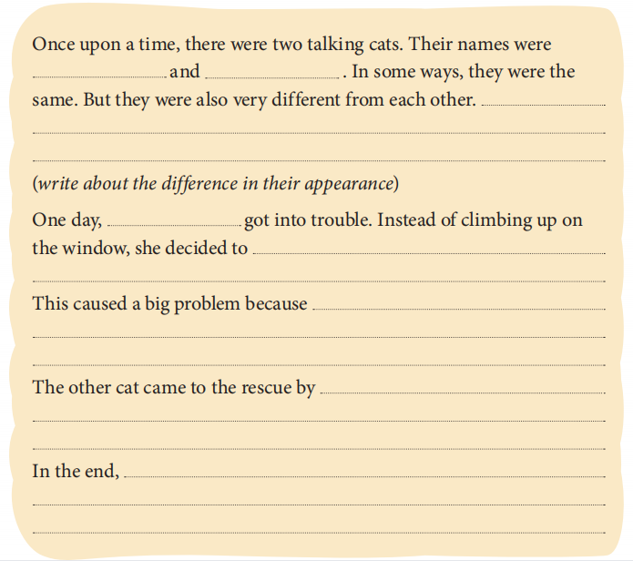
Ans: Answers may vary. Accept any relevant value points. Encourage students to write individually.
------ Chapter 9 -------
Read the cues and complete this paragraph.
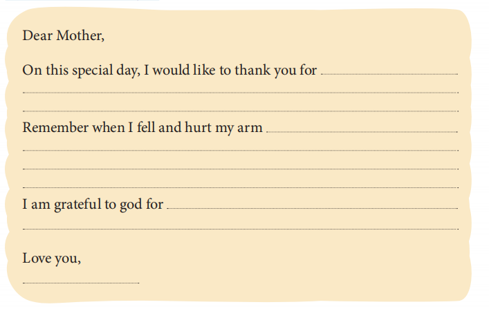
Ans: Students to work on their individual thank-you notes by completing the sentences by filling in the blanks. A few students may be nominated to share their responses.
------ Chapter 11 -------
Mother’s Day is celebrated every year in the month of May. Write a thank you note to your mother, thanking her for everything she does for you and how she takes care of you.
-
Ans: Students to work on their individual apology notes by using the given value points. A few students may be nominated to share their responses.
------ Chapter 12 ------
Imagine you are Mary from the story you just read. You said something to your friend and now your friend is terribly upset with you. Write an apology note to her/him.
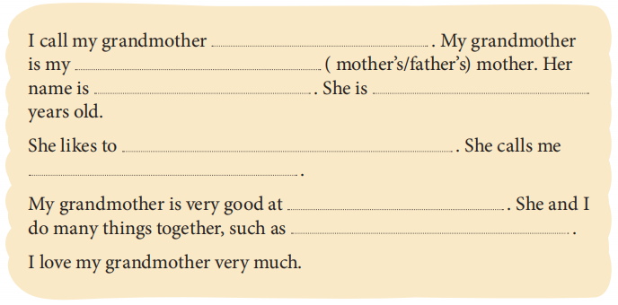
Ans: Students to work on their individual paragraphs by completing the sentences by filling in the blanks. A few students may be nominated to share their responses.
------ Chapter 14 ------
Complete this paragraph about your grandmother by filling in the blanks.
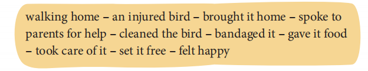
Ans: Answers will differ. Encourage students to write their own creative paragraphs using the cues given in the book.
------ Chapter 15 --------
You recently saved a bird. Write a paragraph with the help of these cues.
- It grew past his feet, and Sammy kept tripping over it.
i. What grew past Sammy’s feet?
ii. How did he feel about it now?
Ans:i. His hair grew past his feet.
ii. He wasn’t happy about it anymore. - Everyone was happy except for the barber…
i. Who is ‘everyone’?
ii. Why was the barber not happy?
Ans: i. Sammy, his mother, and his father
ii. The barber was not happy because he had a lot of cleaning to do, what with so much hair in his salon.
----- Chapter 2 ------
- It was so exciting!
i. What was so exciting?
ii. Who was excited?
iii. What happened after this?
Ans: i. Every time Anansi looked in the clay pot, he learned something new. That was exciting.
ii. Anansi was excited.
iii. Anansi decided to keep the pot safe on top of a tall tree. Then he could have it all to himself.
- The wisdom was free for everyone to share.
i. What made wisdom free to be shared by everyone?
ii. What did everyone learn from this wisdom?
Ans: i. When Anansi threw the pot down, it broke into pieces. As a result, the wisdom was free for everyone to share.
ii. People learned to farm, to weave cloth, to make iron tools, and all the other things that people know how to do today.
----- Chapter 3 ------
- ‘Can I taste it?’
i. Who is the speaker?
ii. What does the speaker want to taste?
iii. Does the speaker like it?
Ans: i. Meenu is the speaker. ii. She wants to taste Kamlesh’ lunch of jowar bhakri and bhaji. iii. Yes, she does. - ‘Yes, yes, Sachi!’
i. Who is the speaker?
ii. Who is Sachi?
iii. For what is the speaker saying ‘yes’?
Ans: i. Meenu is the speaker.
ii. Sachi is Meenu and Kamlesh’s classmate.
iii. Meenu is saying ‘yes’ to Sachi coming over and having lunch with her and Kamlesh.
----- Chapter 5 ------
- ‘O Lali, I’m so tired of living in a dark cave.’
i. Who is the speaker?
ii. Why were they living in a cave?
iii. What did they do after this?
Ans: i. Kindru-Lalim is the speaker.
ii. They were living in a cave because they did not know what a house looked like.
iii. After this they planned to build a house in the forest.
Read the extracts given below and answer the questions that follow. - ‘Collect a lot of leaves and put them on the roof, one on top of the other,
like my scales.’
i. Who is the speaker?
ii. Why did the speaker give this advice?
iii. How did this advice help the listener(s)?
Ans: i. The fish is the speaker.
ii. The speaker gave this advice so that the house would be protected from sun and rain.
iii. This advice helped the listeners to protect their house.
----- Chapter 8 -------
Read the extracts given below and answer the questions that follow.
- ‘I’ve found something!’
i. Who is the speaker?
ii. What has the speaker found?
iii. What does the speaker do next?
Ans: i. Henry
ii. an old-fashioned safe
iii. He asks Gareth for help.
Read the extracts given below and answer the questions that follow. - ‘I thought my life was in danger, but I was very brave.’
i. Who says this and to whom?
ii. Why does the speaker think his/her life was in danger?
iii. What happens after the speaker says this line?
Ans: i. Henry to the friends
ii. because he saw a ghost but he survived the incident all alone.
iii. Mary says she was the one under the sheet.
------ Chapter 9 --------
Read the extracts given below and answer the questions that follow.
- But someone else is under the jamun tree before them.
i. Who is being referred to as ‘them’?
ii. Why are they under the jamun tree?
iii. Who is under the jamun tree before ‘them’?
Ans: i. Puchku and Dodla
ii. They were under the jamun tree because it was time for tiffin.
iii. The little bird is under the jamun tree before ‘them’.
Read the extracts given below and answer the questions that follow. - ‘But she has you, right?’
i. Who is the speaker?
ii. Who is being referred to as ‘she’?
iii. Why does the speaker say this?
Ans: i. Wildlife Didi
ii. the baby bird
iii. She is sure that even though the bird cannot communicate it would never be lonely as she has Puchku and her friends.
------ Chapter 11 -------
Read the extracts given below and answer the questions that follow.
- ‘I don’t think she’ll ever wear it. I would never wear it.’
i. Who is the speaker?
ii. Who is being referred to as ‘she’?
iii. What would the speaker never wear?
Ans: i. Mary
ii. Josana’s mother
iii. The speaker would never wear the waistband that Josana had made.
Read the extracts given below and answer the questions that follow. - ‘Do you think we can build a train to run on this?’
i. Who is the speaker?
ii. What is being referred to as ‘this’?
iii. What did this line mean to the listener?
Ans: i. Josana is the speaker.
ii. The bamboo bridge made by Mary is being referred to as ‘this’.
iii. To the listener this line meant that Josana is ready to patch up and become friends again.
-------- Chapter 12 -------
Read the extracts given below and answer the questions that follow.
- ‘Tis such a very pleasant day,
We do not want to go away.’
i. Who does not want to go away?
ii. Where do they have to go?
iii. What do they want to do instead?
Ans: i. the leaves ii. to sleep/to the ground iii. stay on until spring
Read the extracts given below and answer the questions that follow. - Waiting till one from far away,
White bedclothes heaped upon her arm,
Should come to wrap them safe and warm.
i. What does the poet mean by ‘white bedclothes’?
ii. Who would be wrapped safe and warm?
Ans: i. snow ii. the leaves would be wrapped safe under the snow and decompose becoming one with the ground.
------- Chapter 13 -------
Read the extracts given below and answer the questions that follow.
- ‘That won’t mend the plate!’
i. Who is the speaker?
ii. Why does he/she say this?
iii. What does he/she do after this?
Ans: i. Wife
ii. …because the grandfather had broken the plate by dropping it.
iii. She tells him to sit behind the oven and eat from a wooden plate.
Read the extracts given below and answer the questions that follow. - ‘Bless me! What are you making, child?’
i. Who is the speaker?
ii. Who is the child?
iii. What is the child making?
Ans: i. Wife
ii. Little Hans is the child.
iii. The child is making a wooden trough with his blocks.
------- Chapter 14 ------
Read the extracts given below and answer the questions that follow.
- ‘I have heard that you are the wisest man in the world. And surely this
simple thing ought not to puzzle you.’
i. Who is the speaker?
ii. Who is the wisest man in the world?
iii. Which ‘simple thing’ is being referred to here?
Ans: i. The Queen of Sheba
ii. King Solomon
iii. The ‘simple thing’ referred to here are the real and artificial flowers.
Read the extracts given below and answer the questions that follow. - ‘Some would have smiled, if they had dared.’
i. Who is being referred to as ‘some’?
ii. Why would they have smiled?
iii. Why could they not do so?
Ans: i. The king’s officers and great men are being referred to as ‘some’
ii. They would have smiled because for once, their King seemed unable to sole a riddle.
iii. …because they were in the presence of their King and could not show disrespect.
------- Chapter 15 -------
Read the extracts given below and answer the questions that follow.
Test Name
NEUBERG QUESTION PAPER
Marks:
Student Name: ________________ Marks Obtained: _________
Total Duration :